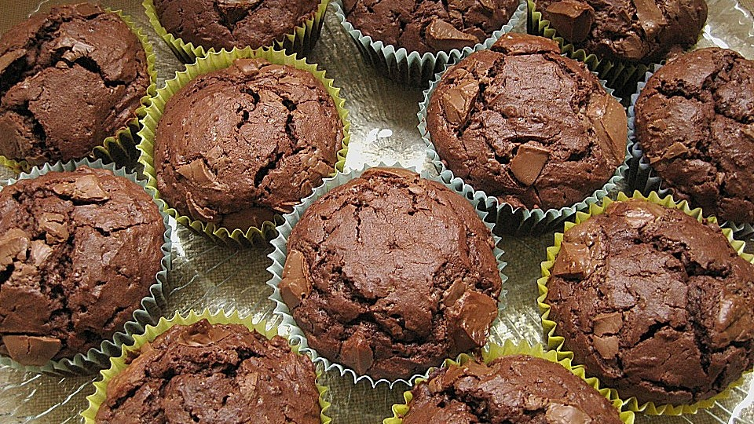

Tahoe Cake

Tahoe muffins or cake made basic ingredients and many other yummy ones
This is something I learned back in 2002, when we travelled to Lake Tahoe, US
Ingredients
- BOWL 1
- 2 glasses corn flakes
- 250ml milk
- 1/2 glass sunflower oil
- 2 eggs
- BOWL 2
- 1&1/2 glass self-raising flower
- 1/2 glass sugar
- 2 teaspoons baking powder(eventually a pinch of baking soda)
- 1 teaspoon cinnamon
- Optional
- lemon peel
- seeds or nuts
Preparation
- BOWL 1: beat the eggs and mix these 4 ingredients. Let it rest for 30'.
- Add all ingredients in another BOWL 2 and mix.
- After 30'-40' put together all ingredintes and stir gently but thoroughly until we get a good mix.
- Let it rest for another 60'. And keep in the fridge. Even until the day after.
- Preheat the oven: 200ºC. When dough is in turn down to 180ºC and keep for 15'-20'.
- Let it cool down for a while before eating it.